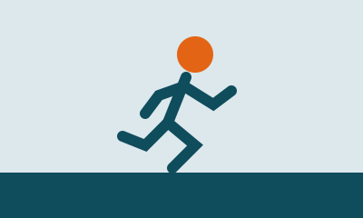

Treino em casa
Não tem academia por perto? Sem problema. Seu peso do corpo já é um ótimo equipamento.
Vídeo de aquecimento
Isso Muda Seu Corpo em 1 Minuto Por Dia (E É Real)
Música para o ritmo
Áudio para você se inspirar!
Circuito sem equipamento

- Polichinelo: 30 segundos
- Agachamento: 15 repetições
- Flexão na parede ou no chão: 10 repetições
- Corrida no lugar: 30 segundos
Faça o circuito 3 vezes, descansando 1 minuto entre cada volta.
Dica extra: o corpo humano é feito de cerca de 60% de H2O. Beba água durante o treino!